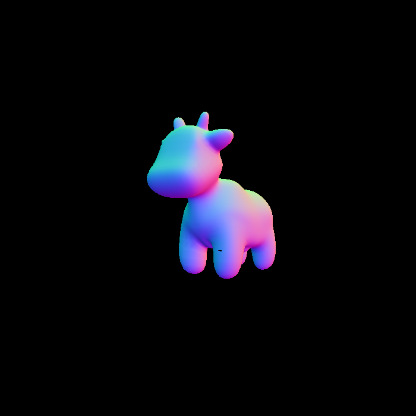
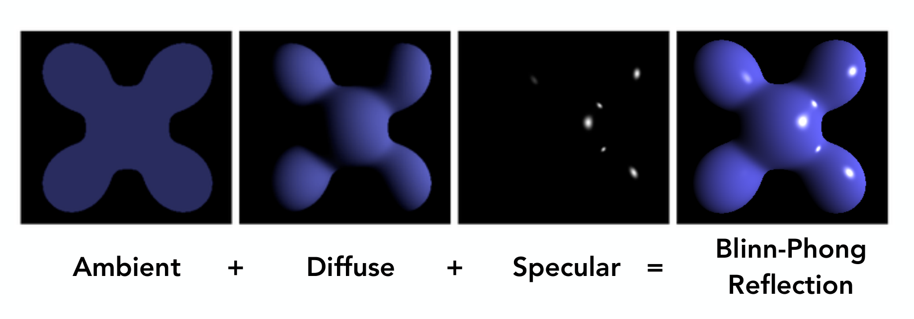
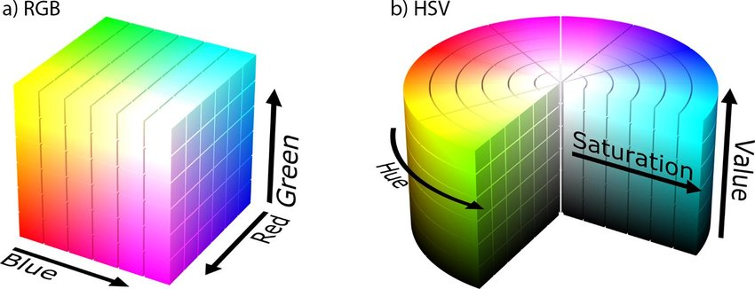
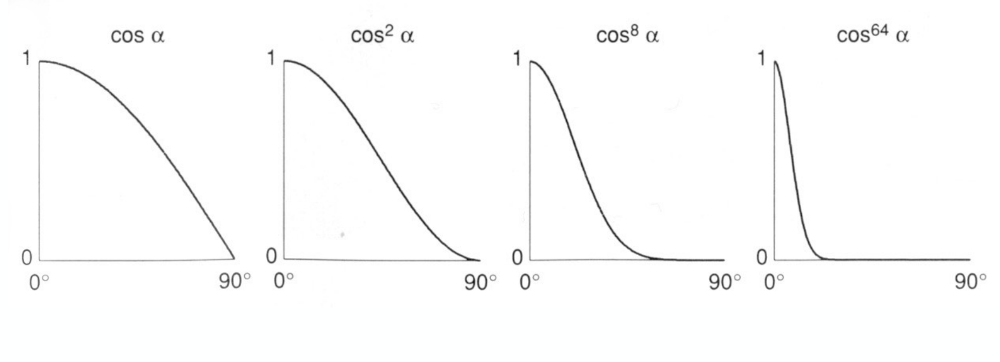
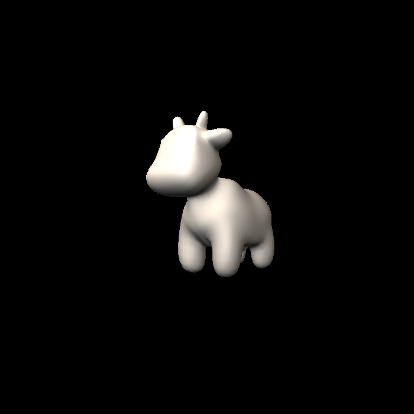
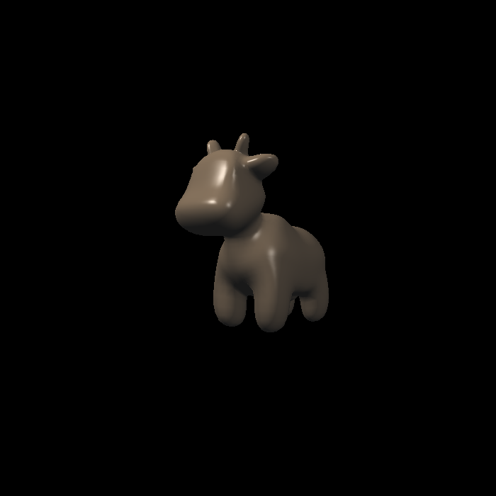
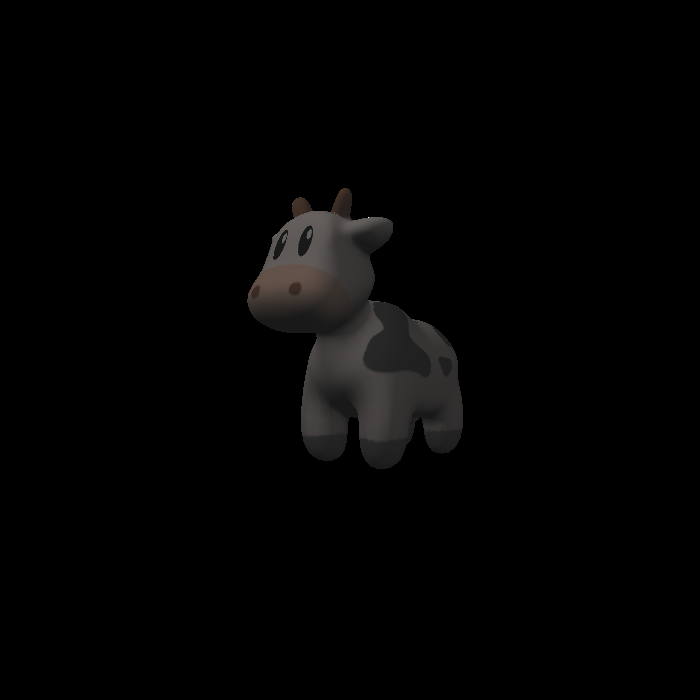
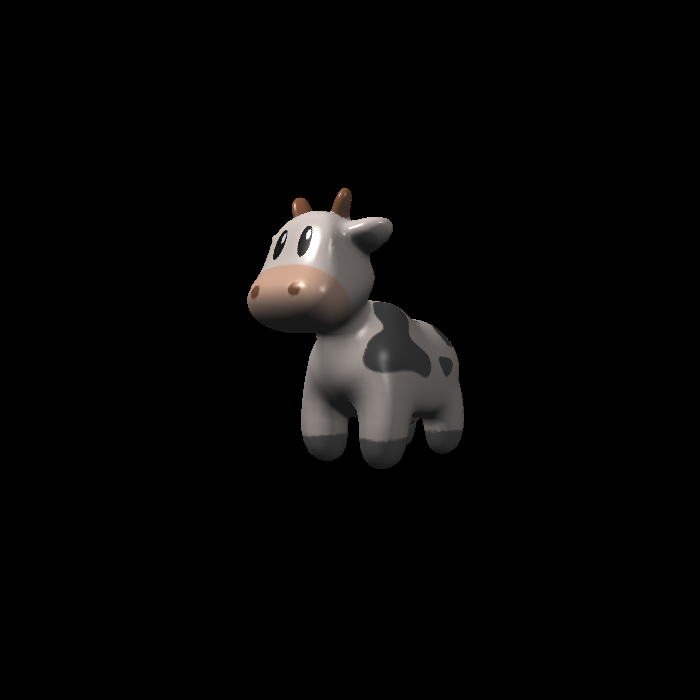
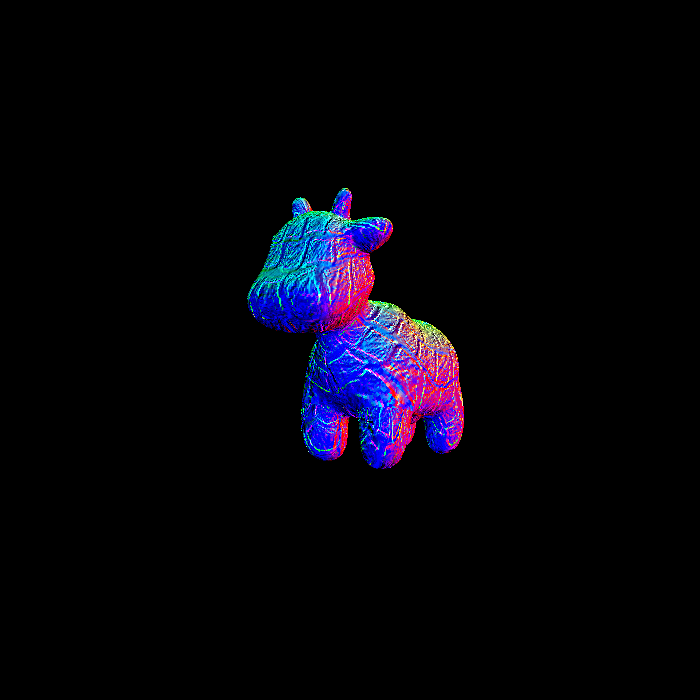
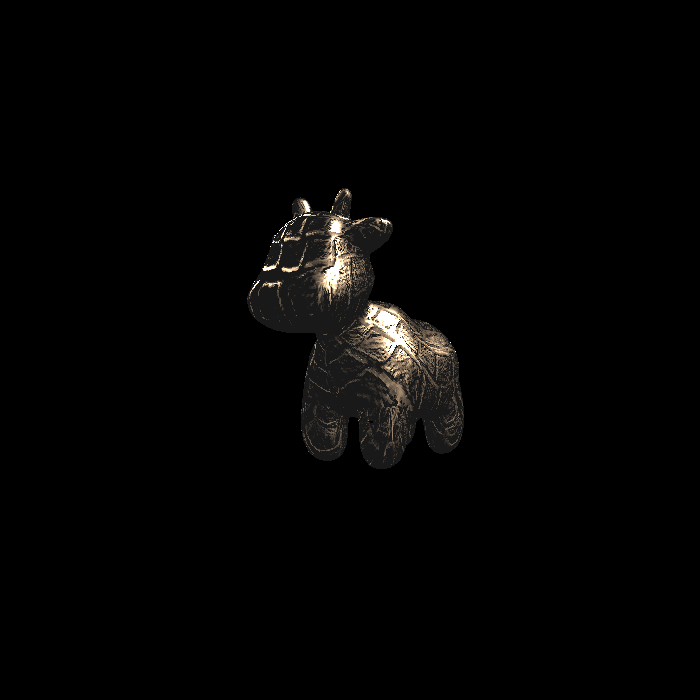

Normal Shader 效果调试
遇到许多问题, 包括但不限于文件导入错误、图像全黑、黑点、颠倒.
三角形光栅化
作业三的框架修改了很多, 列举部分如下.
本框架使用的.obj文件为文本文件, 可以使用VSCode打开. 内容示例如下.
1
2
3
4
5
6
7
8
9
10
11
12
13
14
15
16
17
18
19
20
21
22####
#
# OBJ File Generated by Meshlab
#
####
# Object spot_triangulated_good.obj
#
# Vertices: 3225
# Faces: 5856
#
####
vn 0.713667 0.093012 -0.694283
vt 0.854030 0.663650
v 0.348799 -0.334989 -0.083233
vn 0.742238 0.092067 0.663782
vt 0.724960 0.675077
v 0.313132 -0.399051 0.881192
vn 0.851635 0.494407 -0.174014
vt 0.892477 0.736968
v 0.266758 0.181628 0.122726
vn 0.668900 0.580798 0.463946
...其中数据含义为如下.
符号 释义 v 几何体顶点(Geometric vertices) vt 贴图坐标点(Texture vertices) vn 顶点法线(Vertex normals) 其中坐标并不全为正数, 如果你和我一样在作业二中这样实现包围盒.
1
2
3
4
5
6
7
8
9
10
11
12
13
14
15
16
17
18
19
20//将其初始化为0
float xMin = 0, xMax = 0, yMin = 0, yMax = 0;
for (int i = 0; i < 3; i++){
Eigen::Vector4f vertex = v[i];
xMin = std::min(vertex[0], xMin);
xMax = std::max(vertex[0], xMax);
yMin = std::min(vertex[1], yMin);
yMax = std::max(vertex[1], yMax);
}
xMax = floor(xMax);
xMin = ceil(xMin);
yMax = floor(yMax);
yMin = ceil(yMin);
for (int x = xMin; x < xMax + 1; x++){
for (int y = yMin; y < yMax + 1; y++){
\*code...*\
}
}可能输出结果一直为纯黑.
深度插值实现了透视矫正, 但是后续其他属性调用的
interpolate()没有. 🤔事实上, 由于toVector4()中将w设置为1, 深度插值的透视矫正也没有实现. 但这对输出结果影响不大.set_pixel()参数1
2
3Eigen::Vector2i point;
point << x, y;
set_pixel(point, pixel_color);作业二中参数如下.
1
void rst::rasterizer::set_pixel(const Eigen::Vector3f& point, const Eigen::Vector3f& color)
文件导入
如果在主函数中可以看到, 我们将导入模型文件.
1 | bool command_line = false; |
后续会根据我们变量texture选择贴图材质.
1 | auto texture_path = "hmap.jpg"; |
我们将其改为绝对路径.
1 | std::string obj_path = "E:/Games101/GAMES101_Homework3_S2021/Homework3/Assignment3/models/spot/"; |
此处需要说明.
可以使用Linux风格的文件路径来规避转义符号, 亦可使用//.
其中obj_path最后需要有/, 这是因为该路径后续需要拼接决定贴图材质.
笔者在调试过程中也出现过输出图像为纯黑😵, 这可能是因为文件没有导入成功或者深度判断有问题（初值赋错或大小判断错误）. 建议添加如下代码判断.
1 | bool loadout = Loader.LoadFile("E:/Games101/GAMES101_Homework3_S2021/Homework3/Assignment3/models/spot/spot_triangulated_good.obj"); |
其中由于命令行运行过于繁琐, 对代码改动如下.
1 | // 打开命令行模式 |
这样直接运行即可. 最后终于调试成功，但发现上下颠倒. 这是框架问题，请见知乎专栏 .
笔者是直接修改输入参数并修改深度值规则实现正确输入的, 其中需要注意. 若更改深度大小规则, 需要在初始化时重新设置.
1 | void rst::rasterizer::clear(rst::Buffers buff) |
至此, 实现了正确的图像输出. 但是发现有一个小黑点, 非常奇怪.
| 效果图 | 深度判断错误 |
|---|---|
 |
黑色色块的边缘可以看到其后紫色的腹部, 很明显这里的深度值出现了一些问题.
很离谱, 问题出在了深度值判断语句. 为了便于阅读, 笔者将此处判断写成下列形式.
1 | if (zp < depth_buf[index]){ |
如果换成一般的形式, 渲染结果就无问题.
1 | if (zp >= depth_buf[index]){ |
想到这是在编程, 一切都很正常.😋😋😋
Blinn-Phong 模型实现
实现如下模型.

\[ \begin{aligned} L & =L_a+L_d+L_s \\ & =k_a I_a+k_d\left(I / r^2\right) \max (0, \mathbf{n} \cdot \mathbf{l})+k_s\left(I / r^2\right) \max (0, \mathbf{n} \cdot \mathbf{h})^p \end{aligned} \]这里有必要对RGB颜色空间有直观的了解.

函数中, light为结构体.
1 | struct light |
编程中采取的操作基本为: 若欲增加亮度, RGB三项同比扩大. 可以看到, 基本上就是实现增亮的效果. 关于高光部分, 有参数p调整高光范围.

请不要忘记. 否则会出现左图这种情况, 高光泛滥😣😣.
| 未调整 | 调整后 |
|---|---|
 |
 |
Texture贴图实现
这里会遇到两个问题.
无输出图像.
这是因为纹理坐标会插值出现负数. 作业框架问题好多, 修改如下.
1
2
3
4
5
6
7
8
9
10
11Eigen::Vector3f getColor(float u, float v)
{
if (u < 0) u = 0;
if (u > 1) u = 1;
if (v < 0) v = 0;
if (v > 1) v = 1;
auto u_img = u * width;
auto v_img = (1 - v) * height;
auto color = image_data.at<cv::Vec3b>(v_img, u_img);
return Eigen::Vector3f(color[0], color[1], color[2]);
}警告
libpng warning: iCCP: known incorrect sRGB profile.这个警告对运行没有影响, 不是因为它无法输出的. 误导性极强. 😅😅😅
解决方法见GAMES .
解决之后得到图像特别昏暗. 很奇怪, 可以看到明暗关系的存在, 但是高光一点都没有. 纳闷了😑😑

找了半天发现是在做Blinn-Phong 模型时发现法向量是在rasterizer中标准化的, 看不顺眼将其放在了phong_fragment_shader中实现. 结果拷贝的时候没有带过来. 不要轻易改框架！！

Bump && Displacement Mapping实现
时隔两周，发现Texture贴图又无法输出. 之前遇到过这种情况，是通过将get_color()函数做范围限制解决的. 不知为何又出现.
参考 文档 得到解决. 更改如下.
1 | Eigen::Vector3f getColor(float u, float v) |
发现此处不需要做什么，只需要将注释写出即可. 但注释的代码比较复杂. Ohio州立大学Slide 供参考.

Displacement Mapping结果.

双线性插值
TODO...